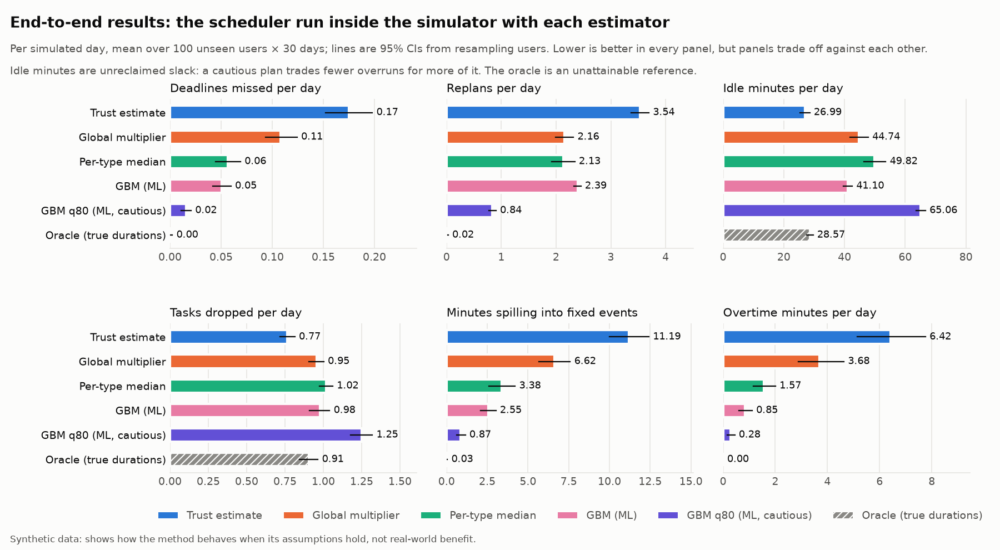

The claim, and what it costs
People plan from their own estimates, and those are biased low. A planner that believes them over-promises, and the day turns into a chain of overruns. FlowDay puts a learned duration estimate in front of a deterministic scheduler. In the simulator, per day, against trusting the user:
The last tile is the honest one. Trusting the user completes the most tasks, by over-committing and then spilling into meetings, working overtime and missing deadlines. ML planning drops about 0.2 more tasks a day up front, with a reason, instead of failing them later. Whether that trade is right depends on what an overrun costs a person, which this study cannot measure.
The idea in seven steps
Each step is a question. The next step exists because the previous one answered it or exposed a weak spot.
- Is the claim even true?People plan from biased estimates, so a planner that believes them should over-promise. Everything is measured against that baseline, "trust the user".
- How do I make the comparison fair?Split the system: a deterministic scheduler with no ML, tested hard, and a swappable estimator that only hands it minutes per task. Then the estimator is the only thing that changes between plans.
- Where does data come from?There is none that is real, so a documented bias model (task type, size, time of day, a personal offset, noise) generates labelled synthetic days. Every estimator sees the same days and the same hidden noise.
- How much of the bias can be learned?Three baselines, then gradient boosting with past-only history features, split by user. Against a noise floor of 11.3 minutes the model scores 11.7 and trusting the user 23.1. The per-type median (14.6) is a strong baseline.
- Does a better number make a better day?Run the scheduler inside the simulator, let tasks take their true duration, replan on overruns. Yes, at the cost above.
- What did that expose?Each weak spot became the next piece of work: idle time led to reclaiming early finishes; that moved about seven start times a day, which led to a minimum-gain threshold; quantiles that fail for new users led to a distribution-shift test; "I only varied my own parameters" led to heavy-tailed and drifting-habit worlds; changing habits led to a drift check.
- Can I trust my own work?I audited it. The validator had silently lost four checks and the baselines took a median on the wrong scale. Both are fixed and disclosed instead of quietly corrected.
How it works
The scheduler only ever sees a number of minutes per task. Swapping the estimator is therefore the whole experiment.
- Scheduler. Admits tasks in priority order, but only if everything admitted so far can still be sequenced with every deadline met (an exact search with a node budget). Anything else is dropped with a reason. Fixed events and finished work never move. It is checked against a brute-force oracle and by injecting nine bugs; eight are caught and the ninth is an equivalent mutant.
- Estimators. Trust the user, one global multiplier, a per-type median, and gradient boosting for the median and the 80th percentile. The planning percentile is a dial: higher means fewer overruns and more dropped tasks.
- Evaluation. Same synthetic days and hidden noise for every estimator, so differences are paired. Intervals come from resampling whole users, because one user's days are correlated.
What the evidence shows
Per simulated day, 100 unseen users over 30 days each, early finishes not reclaimed:
| Estimator | Deadlines missed | Replans | Tasks dropped | Min spilling into events | Tasks completed |
|---|---|---|---|---|---|
| Trust the user | 0.17 | 3.54 | 0.77 | 11.2 | 5.28 |
| Global multiplier | 0.11 | 2.16 | 0.95 | 6.6 | 5.09 |
| Per-type median | 0.06 | 2.13 | 1.02 | 3.4 | 5.03 |
| ML (median) | 0.05 | 2.39 | 0.98 | 2.6 | 5.07 |
| ML, cautious (80th pct) | 0.02 | 0.84 | 1.25 | 0.9 | 4.80 |
| Oracle (true durations) | 0.00 | 0.02 | 0.91 | 0.0 | 5.14 |
Confidence intervals, paired differences and the reclaim-early variant are in the full write-up.

- The per-type median is a strong baseline. It is within noise of the model on missed deadlines. The model's clear edge is overtime and per-task accuracy.
- There is no free point on the caution curve. Each step up the planning percentile buys fewer misses and replans and costs more dropped tasks.

What this does not prove
- The model was told the answer's shape. The generator is log-linear in features the estimator is given. Recovering it shows the pipeline works, not that human durations are this learnable.
- The biases are my assumptions, loosely inspired by the planning-fallacy literature, not measured.
- Calibration breaks under shift. For brand-new users who underestimate more than anyone in training, the 80th-percentile coverage is 0.68 in their first week, and recovers only as history accumulates. Anchoring on the user's own history lifts it to just 0.72, because 14% of first-week tasks have no history at all. I tried it and did not adopt it.
- Robustness is shown only for mild departures. Seeds, noise and bias strength change the size of the gains, not their direction. Heavy-tailed noise and steadily drifting habits do not break it either, but both are still log-linear plus noise. Abrupt changes, interdependent tasks and a user who reacts to the planner were not tried.
- One day at a time. No experiment evaluates a multi-day horizon, and the scheduler has no task splitting or dependencies.
How I checked my own work
- 193 tests with property-based checks against a brute-force oracle; strict type checking; about 95% line coverage; CI on Python 3.11 to 3.13.
- Reports regenerate byte for byte from a fixed seed.
- Mistakes the checks found are listed, not hidden: the validator that had silently lost four checks, a median taken on the wrong scale, a routine that could be planned a day early.
Run it
You need uv and Python 3.11 or newer.
git clone https://github.com/asim-aa/flowday
cd flowday
make install
make train # synthetic data, tuned models (1 to 3 min)
make app # the Streamlit plannerEnter fixed events and tasks, plan the day, then press "ran over by N minutes" and watch the rest replan. Switch between the baselines and the ML estimators, and slide how cautious the plan should be. Run locally, the app logs your real durations and can retrain on them after 60 measured completions.